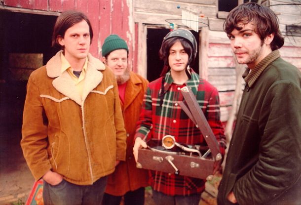
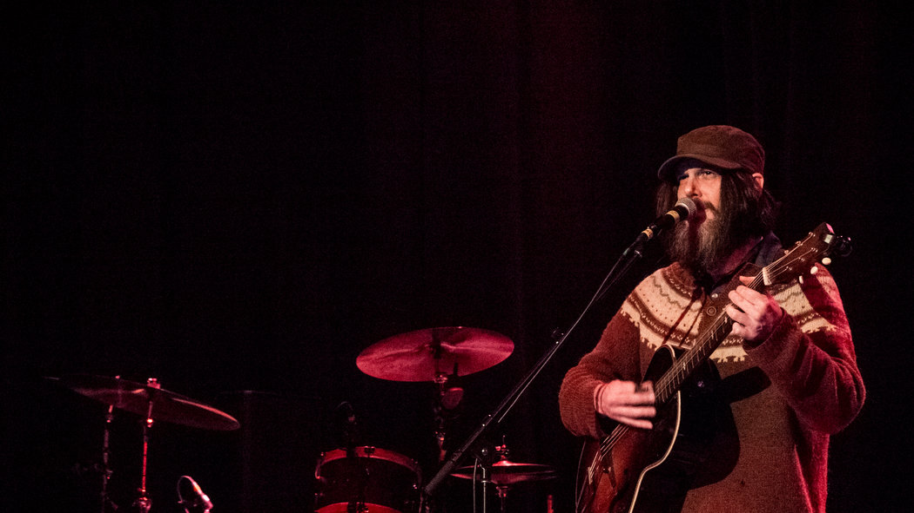

Neutral Milk Hotel, une Introduction
— par Dirty Henry
Le Trianon, Paris, 25 mai 2014. Lætitia Sadier sort de scène. C’est l’avant-dernière fois que la chanteuse de Stereolab ouvre pour la tête d’affiche de la soirée, Neutral Milk Hotel. Il ne reste plus que quelques minutes avant que Jeff Mangum n’entre en scène.
Neutral Milk Quoi ? Jeff Qui ?
Nous sommes à la fin des années 90. Jeff Mangum a grandi à Ruston, Louisiane, et la vie locale et ses bullies le convainquent qu’il n’est pas à sa place et qu’il souhaite une vie à l’opposé de ce qu’il voit tous les jours, à tout point de vue. Il part alors créer une communauté de copains musiciens afin de prouver que sa théorie tient bon : “la musique peut guerrir tous les maux”.
Athens, Géorgie, est la destination retenue. Le collectif Elephant Six est né. Plusieurs groupes naissent : les Apples In Stereo de Robert Schneider, The Olivia Tremor Control de Bill Doss & Will Cullen Hart dans lequel joue notre pote Jeff, qui enregistre aussi des chansons seul sous le nom de Neutral Milk Hotel.
En 1996, le premier album On Every Island est un joli coup d’essai. Les copains ont dépanné lors de l’enregistrement (Jeff bourlingue pas mal : Seattle, Denver, New York) mais après la sortie du disque, la composition du groupe se stabilise. Julian Koster (qui joue un peu de tout mais notamment du banjo et de la scie musicale), Scott Spillane (cuivres) et Jeremy Barnes (batterie) sont désormais des membres à part entière.

En 1998, le second In An Aeroplane Over The Sea, avec Schneider à la production, est un chef-d’œuvre. À sa sortie, les critiques sont emballés et si les ventes restent confidentielles, leur niveau ne s’affaisse pas, jamais. Il finit même 6ème vinyle le plus vendu de l’année… en 2008. Et finalement le groupe en vendra un bon paquet. Côté critique, Pitchfork le nomme 4ème meilleur album des 90s tandis que le plus méconnu Magnet le place à la 1ère place, devant Nirvana, Radiohead et les autres.
Que faire après le chef-d’œuvre ?
Deux mois avant la sortie de In the Aeroplane Over the Sea, il déclare :
It took me a while to figure out that the songs were positive, not just these fucked-up nightmares that I was throwing up.
Soit :
Ça m’a pris un moment de comprendre que les chansons étaient positives, et pas seulement des cauchemars chtarbés que je vomissais.
Quoiqu’il ne fait plus que jouer de la musique, les maux internes de Jeff et de son entourage sont toujours là. Sa théorie ne tient donc pas et le voilà décontenancé : il va falloir explorer d’autres champs que la musique pour explorer son mal-être.
La décennie qui suit le voit devenir une sorte de Salinger du folk lo-fi. Les fans scrutent la moindre de ses apparitions. Certains sortent des communiqués de presse en se faisant passer pour lui. Arcade Fire signe chez Merge en citant comme source de motivation que c’est le label de Neutral Milk Hotel.
Le silence radio continue jusqu’à 2013 : Neutral Milk Hotel fera une tournée mondiale qui passera par Paris en 2014. Jeff évite la presse et on n’en saura pas davantage.
Le concert
Ce n’était pas le premier concert de reformation que j’allais voir et même si certains furent très convaincants (Blur à Hyde Park, Pulp à Primavera), je savais aussi que le pari est parfois risqué (The La’s à Rock en Seine).

Pourtant, les premiers titres ne laissent plus place au doute : le concert va être excellent. Jeff Mangum arrive seul, à droite de la scène pour attaquer Two-Headed Boy. About A Boy m’avait appris qu’il ne fallait jamais fermer les yeux en chantant. Neutral Milk Hotel m’a démontré que c’était une connerie.
Vers la fin du morceau, ses acolytes le rejoignent : Scott, ses cuivres et ses faux airs de Potiron s’installent à gauche, le batteur Jeremy et sa moustache d’une virilité folle au fond, et Julian le fou avec le bonnet chelou prend le devant de la scène. Mangum avait déjà posé des bonnes bases d’intensité avec un chant si sincère qu’il donne l’impression d’y laisser ses tripes. Les instruments en rajoute une couche en attaquant Holland, 1945.
On est dans un mix entre Beirut et Arcade Fire mais le show n’est pas aussi chorégraphié. Tout est plus naturel, organique, sincère. La salle n’est pas bien grande, le public n’est pas très nombreux mais le parquet tremble : on a affaire à des fans incroyables, qui connaissent toutes les chansons et les filles s’agitent aux premiers rangs du balcon. Magique.
Et maintenant ?
Une anecdote relatée par Diffuser.fm :
Dans la foule, un mec cria : “Joues-en une nouvelle !”. Mangum répondit : “Vous n’entendrez jamais ces chansons.” La salle devint silencieuse. “Quoi ?” souria-t-il. “C’est pas qu’elles n’existent pas…” avant de poursuivre le concert sans qu’un seul nouveau titre ne soit joué.
En outre, fin 2014, le groupe annonce que la tournée sans fin s’achèvera au printemps 2015. (sic). Il ne reste que des dates aux US. Si vous n’avez pas eu la chance de voir le groupe jusqu’à présent, c’est donc le moment de se montrer patriote, de dire merde à son empreinte carbone et d’aller donner des sous à Air France.
La Playlist
Pis, quand même une playlist pour finir :
- 3 titres de Neutral Milk Hotel : les deux qui ont ouvert le concert parisien et un morceau de bravoure, Oh Comely (notez le “Holy Shit” d’un mec impressionné par le chant de Jeff au bout des huit minutes et quelques de la chose)
- quelques titres des autres groupes d’Elephant 6
- des inspirations de Jeff : Minutemen, Soft Machine, Charlie Haden et Daniel Johnston
- je vous ai épargné un morceau de musique folklorique bulgare qui est le kiff actuel de Mangum
EDIT (novembre 2016) : pour vous mettre dans l’ambiance de Athens, Géorgie, en 1997, voici un petit live dans une maison.